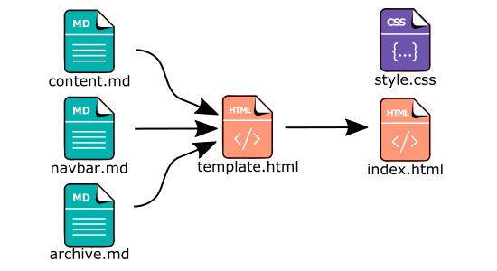

Using GitHub as Host for your Website.
I always had bad experiences from setting up new websites! The hosts are usually expensive with many hidden costs, and they usually have bad support and uptime. That is why I decided to use something different, when I created this site. After founding some articles about hosting your site on GitHub and Dropbox, I decided to give it a try. This post describes how I did the setup.
Create a Repository for the Page
The first thing you need to do is to create an account on GitHub, if you do not already have one. Then you need to create a repository for your new website project. After it have been created you need to clone the project by entering the following command in a terminal:
git clone https://github.com/user/yoursite.git
Then you have to move to the directory:
cd yoursite
Note: change the user and yoursite to your project.
If you have not already changed your user name and email address in git. Then, it can be a good idea to change them, because they are displayed in the history in GitHub.
git config --global user.name User
git config --global user.email user@yoursite.com
Add an Orphan Branch
The next step is to create a new branch. By giving the orphan argument the branch will not have any connection to the original branch, i.e., it will become a new root.
git checkout --orphan gh-pages
If you have any file in the current branch, remove them.
git rm -rf .
Now you can create a empty html file for test purpose, or you can add your new website.
echo "Test Page!" > index.html
Then you need to add the changes, by committing them to git.
git commit -a -m "First website version."
Finally, you need to push the changes to your repository on GitHub.
git push origin gh-pages
Your new website should now be available at:
http://user.github.io/yoursite
Attach a Custom Domain
To link your site with a domain name, you need to create a new CNAME file. The file should contain the name of your domain or sub domain. Place this file in the branch and then add, commit and push.
echo "yoursite.com" > CNAME
git commit -a -m "Add a CNAME to yoursite.com"
git push origin gh-pages
Then you need to update the DNS records for your domain name, that is usually done with your domain provider. Update the new records by pointing them to the ip addresses 192.30.252.153 and 192.30.252.154. You can read more about how you can connect a domain to your GitHub page, here.
Auto Generate the Pages
You can only have static assets like html, css and javascript on your website, this can be a limitation. If you want things like post message or anything dynamic, you need to depend on other providers. It is not that practical to only use html code, to create your website, if it is not a basic website. I use Lua scripts to generate my pages. First the markdown text is converted to html, then they are inserted into a template. The system looks something like this:

But, there are also other static html generator like Jekyll.
Conclusion
Using GitHub to host your website gives you many benefits, but there are also some drawbacks. The good things are that it is free to use, as long as it is your site. You can even monetize from the page like adding ads and donations. Another great thing is that you are in full control and it's easy to use and understand the git system. Also, the connection speed, storage size and uptime for GitHub is good. The bad thing is that you can only create a static website.